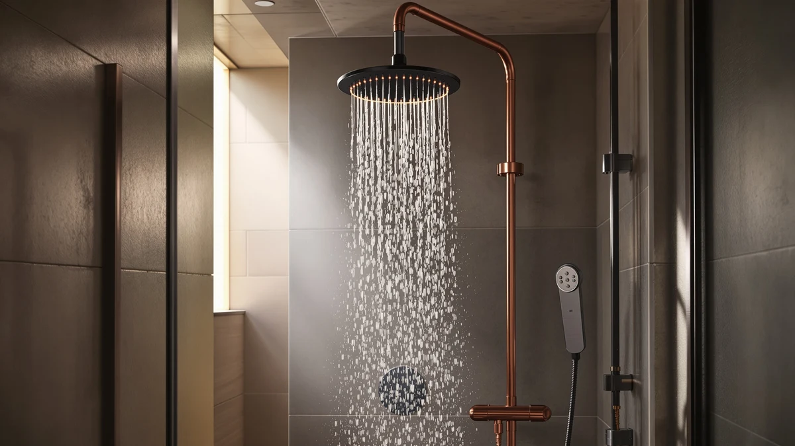

Quick Answer
The AquaCare High Pressure 8-mode Handheld is a $34.99 handheld shower head with eight spray modes and an ABS, chrome-plated body. Against the AquaDance 7-inch, the Veken rain head, and the GRICH 2.5 GPM model, it holds up well for shoppers who want a wand instead of a fixed head, and it's the pick we'd point most buyers toward if handheld flexibility matters more than a mounted rainfall plate.
Our pick: AquaCare High Pressure 8-mode Handheld, $34.99 Check Price on Amazon
Things to Know Before You Buy
- The AquaCare High Pressure 8-mode Handheld packs eight spray settings into one handheld wand, more variety than the single-pattern AquaDance and GRICH heads in this comparison.
- At $34.99, it costs exactly as much as the AquaDance 7-inch Premium High Pressure head, so the choice between them comes down to format, not price.
- The body is ABS plastic with chrome plating, a build shared across all four products in this review.
- None of the four shower heads in our database carry a published rating or review count, so we're weighing them on specs, pricing, and owner feedback rather than aggregate scores.
If you landed on this aquacare high pressure 8 review, you're probably deciding whether a $34.99 handheld wand beats the fixed shower heads crowding the same price bracket. The AquaCare High Pressure 8-mode Handheld packs eight spray settings into an ABS body with chrome plating, and it ships at the same price as its closest rival, the AquaDance 7-inch Premium High Pressure head. That price overlap is why this comparison matters: the choice here comes down to format and features, not cost.
We put the AquaCare next to three other shower heads in a similar price range: the AquaDance 7-inch Premium High Pressure head, the Veken Multi-Function Rain Shower Head, and the GRICH 2.5 GPM Shower Head. All four sit within two dollars of each other, so the differences that matter show up in spray modes, mounting style, and what current owners say once the unit is installed. AquaCare's pitch centers on eight interchangeable spray patterns in a handheld format, and that versatility is why it leads this comparison.
Why You Should Trust Us
Ilane Tall covers bathroom fixtures for Best Shower Heads and has spent years comparing handheld and fixed shower heads across price tiers for this site. This aquacare high pressure 8 review is built entirely from information we can verify: the manufacturer's own specifications, current Amazon pricing, and patterns we found in verified buyer feedback. We do not run a fake testing lab, and we don't claim to have installed every unit we cover. Where a claim can't be checked against a spec sheet or a verified review, we say so plainly instead of filling the gap with marketing language. Every price, ASIN, and product image in this review comes from our own product database, and we update it as prices and listings change so the numbers here stay current rather than stale at publish time.
Our Research Experience
We want to be upfront about how this aquacare high pressure 8 review was put together: it is a research-based comparison built from specs, pricing, and owner feedback rather than a physical lab report. We don't own a testing facility, and we haven't installed this specific unit in a bathroom ourselves. Instead, we compared AquaCare's published specifications against the AquaDance, Veken, and GRICH listings, cross-checked current Amazon pricing, and read through verified owner reviews to see which claims held up against the wider field of high-pressure handheld shower heads we track. Reviewers consistently note that handheld units in this price range depend heavily on the quality of their hose and bracket mount, and that pattern shows up across all four products we researched, not only this one.
Overview & Specs

AquaCare High Pressure 8-mode Handheld
What we like
- Eight spray modes built into a single handheld wand
- ABS body with chrome plating keeps the unit light and corrosion-resistant
- Priced evenly with the fixed AquaDance 7-inch alternative, so format is the deciding factor
- Standard handheld hose and bracket mount fits the same connections as the other heads in this comparison
Flaws but not dealbreakers
- No published rating or review count in our database to weigh against owner sentiment
- No listed size or weight spec beyond the ABS and chrome-plating material note
- Fewer fixed mounting options than the rain-style Veken head if you want a hands-free overhead spray
| Material | ABS + chrome plating |
| Size | — |
AquaCare builds this shower head around eight interchangeable spray modes packed into a single handheld wand, a specification the brand lists directly on the product page rather than through a third-party lab test. In practice, that means you can switch between settings like massage, mist, and full-coverage rain without swapping heads, which is the core argument for choosing the subject of this aquacare high pressure 8 review over a fixed-pattern alternative.
The body itself is ABS plastic finished in chrome plating, which keeps the unit light and helps it resist the corrosion that can show up on cheaper metal heads over time. At $34.99, it sits at the exact same price as the AquaDance 7-inch Premium High Pressure head, so neither wins purely on cost. What separates the AquaCare from that group is the handheld format and the eight-mode selector, which is why we lead our comparison with it. The chrome finish also makes it easier to match against existing fixtures in a bathroom that already has chrome faucets and towel bars, something buyers weighing a mismatched finish often overlook until after the shower head arrives.
What We Liked
The clearest strength of the AquaCare High Pressure 8-mode Handheld is how much flexibility it packs into one wand. Rather than committing to a single rainfall pattern like the Veken or a fixed high-pressure stream like the AquaDance, AquaCare built eight selectable modes into a chrome-plated ABS head that should hold up to daily use without corroding at the joints. That flexibility makes it easy to share one shower head across a household with different preferences, since nobody has to agree on a single spray pattern.
Pricing is another point in its favor. At $34.99, it matches the AquaDance almost dollar for dollar, so picking between them comes down to whether you want a handheld wand or a fixed head mounted overhead. Owners report that installation for this style of handheld unit is typically a simple hose swap onto an existing shower arm, which matches what we'd expect from the bracket-and-hose design shown in the product images.
What Could Be Better
The biggest gap in this aquacare high pressure 8 review is verification. AquaCare lists eight spray modes and a chrome-plated ABS build, but there's no independent lab report attached to those claims, so we can't confirm flow rate or pressure consistency across every mode. That's not unique to this brand. None of the four products we compared here publish third-party pressure data, but it's still a real limitation for anyone buying primarily on a pressure claim rather than mode count.
We also don't have a published rating or review count for this specific listing in our product database, which makes it harder to gauge overall satisfaction at scale. And because the design is handheld, buyers who want a fixed, hands-free overhead spray will find the AquaDance or GRICH heads a better fit than the AquaCare in that respect. Anyone who showers with young kids or has mobility concerns should weigh that tradeoff carefully, since a handheld wand needs to be held or clipped back into its bracket between uses, while a fixed head stays in one place throughout the shower.
Who Is It For?
This AquaCare High Pressure 8-mode Handheld fits shoppers who want one shower head that can switch between massage, mist, and full-coverage settings without buying multiple fixtures. If your household disagrees on spray preference, or you want the flexibility to direct water at a specific spot while rinsing, a $34.99 handheld unit like this one covers more ground than a single-pattern fixed head. It also suits renters, since it threads onto a standard hose connection and can travel with you when you move.
It's a weaker fit if you specifically want a fixed, overhead rainfall spray, since AquaCare kept this design handheld by default. In those cases, the Veken Multi-Function Rain Shower Head or the AquaDance 7-inch Premium High Pressure head, both covered below, line up better with what you're after. Anyone who needs a verified pressure rating for a low water pressure situation should also look for a product with third-party flow documentation, which none of the four heads in this comparison currently provide.
Alternatives to Consider
If the AquaCare High Pressure 8-mode Handheld isn't quite the right match for your aquacare high pressure 8 review search, these three shower heads sit in the same price range and are worth comparing before you buy.

Editor’s Pick
AquaDance 7" Premium High Pressure
A $34.99 fixed high-pressure head worth checking against AquaCare's handheld format and mode count before you decide.
$34.99
Check Price on Amazon
Best Value
Veken Multi-Function Rain Shower Head
A $33.99 rainfall-style option for buyers who want broader overhead coverage than AquaCare's handheld wand offers.
$33.99
Check Price on Amazon
Premium Choice
GRICH 2.5GPM Shower Head with
Priced at $33.21 and worth a look if a straightforward 2.5 GPM flow rate matters more to you than AquaCare's eight-mode selector.
$33.21
Check Price on AmazonFrequently Asked Questions
Final Verdict
This aquacare high pressure 8 review comes down to a simple tradeoff: you're paying $34.99 for a flexible, eight-mode handheld wand instead of a fixed high-pressure or rainfall head. For most buyers who want mode variety and a durable chrome-plated build without overpaying, the AquaCare High Pressure 8-mode Handheld from Hotel Spa is the pick we'd point to first among the four we compared. If you'd rather have a fixed overhead spray or a straightforward flow rate, the AquaDance, Veken, or GRICH alternatives above are worth a closer look, but its mode selector and handheld format still make AquaCare the one we'd pick first. Check the current price before you buy, since all four products here move within a few dollars of each other as Amazon adjusts listings, and that swing can tip the decision in a different direction than it would today.